경영지도사-1차-1교시(구) (2019-04-06 기출문제)
1과목: 중소기업관련법령
1. 중소기업기본법의 내용으로 옳지 않은 것은?
- 중소기업정책심의회는 위원장 1명을 제외하고 30명 이내의 위원으로 구성한다.
- 정부는 중소기업 사이의 협력에 필요한 시책을 실시하여야 한다.
- 중소벤처기업부장관이 위촉한 중소기업정책심의회 위원의 임기는 2년으로 하며, 한 차례만 연임할 수 있다.
- 중소기업 옴부즈만은 업무에 관한 활동 결과보고서를 작성하여 매년 1월말까지 규제개혁위원회와 국무회의 및 국회에 보고하여야 한다.
- 중소벤처기업부장관은 정부 및 지방자치단체가 행하는 중소기업 보호 및 육성에 관한 업무를 총괄ㆍ조정한다.
(정답률: 알수없음)

2. 중소기업기본법상 정부의 역할로 옳지 않은 것은?
- 정부는 중소기업 육성에 관한 종합계획을 5년마다 수립ㆍ시행하여야 한다.
- 정부는 소기업에 대하여 그 경영의 개선과 발전을 위하여 필요한 시책을 실시하여야 한다.
- 정부는 중소기업시책을 효율적으로 실시하기 위하여 조세에 관한 법률에서 정하는 바에 따라 세제상의 지원을 할 수 있다.
- 정부는 중소기업의 구조를 고도화하기 위하여 중소기업의 법인 전환 등을 원활히 할 수 있도록 필요한 시책을 실시하여야 한다.
- 정부는 중소기업 육성을 위한 지원과 투자를 지속적으로 확대하도록 노력하여야 한다.
(정답률: 알수없음)
3. 중소기업기본법상 중소기업정책심의회에 관한 설명으로 옳지 않은 것은?
- 중소기업 보호ㆍ육성과 관련된 주요 정책 및 계획과 그 이행에 관한 사항을 심의ㆍ조정하기 위하여 중소벤처기업부에 중소기업정책심의회를 둔다.
- 중소기업정책심의회는 둘 이상의 중앙행정기관이 관련된 주요 중소기업 보호ㆍ육성 정책에 관한 사항을 심의ㆍ조정한다.
- 위원장은 위원 중에서 호선한다.
- 중소기업정책심의회는 중소기업 육성과 관련된 제도 및 법령에 관한 사항을 심의ㆍ조정한다.
- 실무조정회의는 소관 사항을 전문적으로 검토하기 위하여 분과별 전문위원회를 둘 수 있다.
(정답률: 알수없음)
4. 중소기업기본법의 내용으로 옳지 않은 것은?
- 정부는 중소기업의 생산성을 향상시키기 위하여 생산 시설의 현대화와 정보화의 촉진 등 필요한 시책을 실시하여야 한다.
- 정부는 매년 정부와 지방자치단체가 중소기업을 육성하기 위하여 추진할 중소기업시책에 관한 계획을 수립하여 관련 예산과 함께 10월까지 국회에 제출하여야 한다.
- 정부는 중소기업자의 사업영역이 중소기업 규모로 경영하는 것이 적정한 분야에서 원활히 확보될 수 있도록 필요한 시책을 실시하여야 한다.
- 중소기업은 대통령령으로 정하는 구분기준에 따라 소기업과 중기업으로 구분한다.
- 정부는 중소기업시책을 실시하기 위하여 필요한 법제 및 재정 조치를 하여야 한다.
(정답률: 알수없음)
5. 중소기업창업 지원법상 액셀러레이터에 관한 설명으로 옳지 않은 것은?
- 파산선고를 받은 자는 복권되어도 액셀러레이터의 임원이 될 수 없다.
- 「상법」에 따른 회사가 액셀러레이터가 되기 위해서는 납입자본금이 1억원 이상이어야 한다.
- 액셀러레이터는 지원할 초기창업자를 선발하여 1천만원 이상을 투자하여야 한다.
- 중소벤처기업부장관은 창업보육센터가 액셀러레이터로 전환할 경우 필요한 비용의 전부 또는 일부를 지원할 수 있다.
- 금고 이상의 형의 집행유예를 선고받고 그 유예기간 중에 있는 자는 액셀러레이터의 임원이 될 수 없다.
(정답률: 알수없음)
6. 중소기업창업 지원법상 중소기업창업투자조합에 관한 설명으로 옳은 것을 모두 고른 것은?
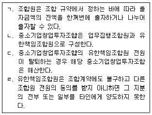
- ㄱ, ㄷ
- ㄴ, ㄹ
- ㄱ, ㄴ, ㄷ
- ㄴ, ㄷ, ㄹ
- ㄱ, ㄴ, ㄷ, ㄹ
(정답률: 알수없음)
7. 중소기업창업 지원법상 중소기업창업투자조합에 관한 설명으로 옳지 않은 것은?
- 업무집행조합원은 조합원 전원의 동의가 있는 경우 중소기업창업투자조합에서 탈퇴할 수 있다.
- 조합의 업무는 업무집행조합원이 집행한다.
- 업무집행조합원은 제삼자의 이익을 위하여 중소기업창업투자조합의 재산을 사용하여서는 아니 된다.
- 업무집행조합원은 중소기업창업투자조합의 업무를 집행할 때 자금차입을 하여서는 아니 된다.
- 중소기업창업투자조합의 해산 당시에 출자금액을 초과하는 채무가 있으면 모든 조합원이 그 채무를 변제하여야 한다.
(정답률: 알수없음)
8. 중소기업창업 지원법상 중소기업창업투자회사에 관한 설명으로 옳지 않은 것은?
- 중소기업창업투자회사란 창업자에게 투자하는 것을 주된 업무로 하는 회사로서 이 법에 따라 등록한 회사를 말한다.
- 미성년자는 중소기업창업투자회사의 임원이 될 수 없다.
- 중소기업창업투자회사는 창업투자회사와 투자자 간, 특정 투자자와 다른 투자자 간의 이해 상충을 방지하기 위한 체계를 갖추어야 한다.
- 중소기업창업투자회사가 그 영업을 양도하면 그 영업을 양수한 자는 중소기업창업투자회사로서의 지위를 승계한다.
- 중소기업창업투자회사는 자본금과 적립금 총액의 20배의 범위에서 사채를 발행할 수 있다.
(정답률: 알수없음)
9. 중소기업창업 지원법상 중소기업창업투자회사에 관한 설명으로 옳은 것은?
- 중소기업창업투자회사는 회계연도마다 결산서를 금융감독원장에게 제출하여야 한다.
- 중소기업창업투자회사의 대주주는 중소기업창업투자회사의 이익에 반하여 대주주 자신의 이익을 얻을 목적으로 반대급부의 제공을 조건으로 다른 주주와 담합하여 경영에 부당한 영향력을 행사하는 행위를 하여서는 아니 된다.
- 중소기업창업투자회사는 중소기업창업투자조합을 결성할 수 없다.
- 중소기업창업투자회사는 그 사업 수행을 위하여 필요하더라도 국제기구로부터 자금을 차입할수 없다.
- 중소기업창업투자회사는 재무에 관한 사항을 공시하지 않을 수 있다.
(정답률: 알수없음)
10. 중소기업창업 지원법상 사업계획의 승인을 받은 창업자 甲이 사업을 개시한 날부터 7년동안 면제받을 수 있는 부담금은?
- 「지방자치법」에 따른 분담금
- 「농지법」에 따른 농지보전부담금
- 「지하수법」에 따른 지하수이용부담금
- 「도시교통정비 촉진법」에 따른 교통유발부담금
- 「전기사업법」에 따른 부담금
(정답률: 알수없음)
11. 벤처기업육성에 관한 특별조치법상 신기술창업전문회사에 대한 설명으로 옳지 않은 것은?
- 대학은 신기술창업전문회사를 설립할 수 있다.
- 신기술창업전문회사를 설립하는 경우 중소벤처기업부장관에게 등록하여야 하지만 이를 변경하는 경우에는 그러하지 않다.
- 신기술창업전문회사는 대학ㆍ연구기관 또는 전문회사가 보유한 기술의 사업화 업무를 영위한다.
- 신기술창업전문회사는「상법」상 주식회사이어야 한다.
- 대학이나 연구기관은 해당 기관이 설립한 신기술창업전문회사의 발행주식 총수의 100분의 10이상을 보유하여야 한다.
(정답률: 알수없음)
12. 벤처기업육성에 관한 특별조치법상 벤처기업의 주식매수선택권에 대한 설명으로 옳지 않은 것은?
- 주식매수선택권을 부여한 벤처기업이 주식매수선택권을 부여받은 자에게 내줄 목적으로 자기 주식을 취득하는 경우에는 발행주식 총수의 100분의 10을 초과할 수 없다.
- 주식매수선택권에 관한 정관의 규정에는 주식매수선택권의 행사 기간이 포함되어야 한다.
- 주식매수선택권을 부여받은 자가 사망한 때에는 그 상속인이 이를 부여받은 것으로 본다.
- 주식회사인 벤처기업은 정관으로 정하는 바에 따라 주주총회의 특별결의가 있으면 주식매수 선택권을 부여할 수 있다.
- 주식매수선택권에 관한 정관의 규정에는 주식매수선택권을 부여받을 자의 자격 요건이 포함되어야 한다.
(정답률: 알수없음)
13. 벤처기업육성에 관한 특별조치법상 한국벤처투자조합에 대한 설명으로 옳지 않은 것은?
- 한국벤처투자조합은 조합 규약에도 불구하고 업무집행조합원에게 투자수익에 따른 성과보수를 지급할 수 없다.
- 한국벤처투자조합을 결성한 자는 중소벤처기업부장관에게 신고하여야 한다.
- 업무집행조합원은 선량한 관리자로서 출자자의 이익을 위하여 한국벤처투자조합의 자산을 관리하여야 한다.
- 중소기업창업투자회사는 한국벤처투자조합을 결성할 수 있다.
- 업무집행조합원은 한국벤처투자조합의 업무를 집행할 때 지급보증을 할 수 없다.
(정답률: 알수없음)
14. 벤처기업육성에 관한 특별조치법의 내용으로 옳지 않은 것은?
- 전략적제휴란 벤처기업이 생산성 향상과 경쟁력 강화 등을 목적으로 기술ㆍ시설ㆍ정보ㆍ인력 또는 자본 등의 분야에서 다른 기업의 주주 또는 다른 벤처기업과 협력관계를 형성하는 것을 말한다.
- 중소벤처기업부장관은 벤처기업을 육성하기 위하여 5년마다 벤처기업 육성계획을 수립ㆍ시행하여야 한다.
- 중소벤처기업부장관은 육성계획의 수립과 시행을 위하여 필요한 경우에는 관계 중앙행정기관의 장에 대하여 자료의 제출을 요청할 수 있다.
- 중소벤처기업부장관은 벤처기업을 체계적으로 육성하기 위하여 매년 벤처기업의 활동현황 및 실태 등에 대해 조사한다.
- 중소벤처기업부장관은 벤처기업 관련 정보를 종합적으로 관리하기 위하여 종합관리시스템을 구축ㆍ운영할 수 있다.
(정답률: 알수없음)
15. 벤처기업육성에 관한 특별조치법상 투자에 해당하지 않는 것은?
- 주식회사가 발행한 주식을 인수하는 행위
- 주식회사가 발행한 무담보전환사채를 인수하는 행위
- 유한회사의 출자를 인수하는 행위
- 주식회사가 발행한 무담보신주인수권부사채를 인수하는 행위
- 주식회사가 발행한 무담보교환사채를 인수하는 행위
(정답률: 알수없음)
16. 벤처기업육성에 관한 특별조치법의 내용으로 옳은 것은?
- 정부출연연구기관은 신기술창업전문회사를 설립할 수 없다.
- 벤처기업에 대한 현물출자 대상에는 디자인권이 포함되지 않는다.
- 연구기관은 신기술창업전문회사를 설립할 때나 그 전문회사가 신주를 발행할 때에 현금을 출자할 수 없다.
- 주식교환을 하려는 벤처기업은 주식교환에 필요한 주식에 대하여는 자기의 계산으로 자기주식을 취득할 수 없다.
- 유한회사인 벤처기업은 정관에서 정하는 바에 따라 사원총회의 결의로 이익배당에 관한 기준을 따로 정할 수 있다.
(정답률: 알수없음)
17. 중소기업진흥에 관한 법률상 협업지원사업에 해당하지 않는 것은?
- 기술개발자금 출연
- 판로개척 지원
- 공동 법인 설립 등에 관한 자문
- 가업승계지원
- 인력 양성
(정답률: 알수없음)
18. 중소기업진흥에 관한 법률의 내용으로 옳지 않은 것은?
- 중소벤처기업부장관은 중소벤처기업진흥공단의 채권 발행을 승인하려면 미리 기획재정부장관과 협의하여야 한다.
- 중소벤처기업진흥공단이 발행한 채권의 소멸시효는 상환일부터 기산하여 원금은 5년, 이자는 2년으로 완성된다.
- 명문장수기업의 확인을 받지 않고 명문장수기업이라는 명칭을 사용한 자에게는 3천만원 이하의 벌금에 처한다.
- 금융업을 영위하는 기업은 명문장수기업이 될 수 없다.
- 이권(利券)있는 무기명식의 채권을 상환하는 경우 이권이 흠결되면 그 이권에 해당하는 금액을 상환액에서 공제한다.
(정답률: 알수없음)
19. 중소기업진흥에 관한 법률상 지역협동기술지원센터의 활동에 해당하지 않는 것은?
- 지역협동기술향상활동을 촉진하기 위한 지방자치단체와의 협조
- 지방중소기업의 생산현장에서의 기술적 애로사항 파악
- 국공립 연구기관의 지역협동기술향상활동에 대한 지원능력의 파악
- 지역협동기술향상활동을 하려는 지방중소기업과「고등교육법」에 따른 대학과의 상호 연계
- 지방중소기업과 대기업의 기술기금 설치와 운영
(정답률: 알수없음)
20. 중소기업진흥에 관한 법률상 협업계획에 포함되어야 하는 사항으로 옳은 것을 모두 고른 것은?
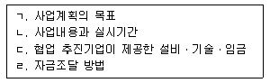
- ㄱ, ㄷ
- ㄴ, ㄹ
- ㄱ, ㄴ, ㄹ
- ㄱ, ㄷ, ㄹ
- ㄱ, ㄴ, ㄷ, ㄹ
(정답률: 알수없음)
21. 중소기업진흥에 관한 법률상 경영지도사 또는 기술지도사가 될 수 없는 경우에 해당하지 않는 자는?
- 금고의 실형을 선고받은 후 그 집행이 끝나고 1년 6개월이 지난 A
- 피성년후견인인 B
- 파산선고를 받고 복권되지 아니한 C
- 징역형의 집행유예를 선고받고 그 유예기간 중에 있는 D
- 지도사등록증을 다른 사람에게 대여하여 지도사의 등록이 취소된 날부터 2년 1개월이 지난 E
(정답률: 알수없음)
22. 중소기업진흥에 관한 법률상 경영지도사의 업무에 해당하지 않는 것은?
- 회계의 진단ㆍ지도
- 사무관리의 진단ㆍ지도
- 공정개선기술의 진단ㆍ지도
- 유통관리의 진단ㆍ지도
- 수출입 업무의 진단ㆍ지도
(정답률: 알수없음)
23. 중소기업 기술혁신 촉진법의 내용으로 옳지 않은 것은?
- 중소기업을 경영하는 자는 중소기업자에 해당한다.
- 지방자치단체는 관할구역의 특성을 고려하여 해당 구역 중소기업의 기술혁신을 촉진하기 위한 시책을 수립ㆍ시행할 수 있다.
- 중소벤처기업부장관은 중소기업 기술혁신 촉진계획을 매년 수립하여야 한다.
- 중소기업의 기술혁신 촉진에 관한 사항을 심의ㆍ조정하기 위하여 중소벤처기업부에 중소기업기술혁신 추진위원회를 둔다.
- 중소벤처기업부장관은 기술혁신 촉진 지원사업을 추진하는 데에 필요하다고 인정하는 경우에는 미리 관계중앙행정기관의 장과 협의하여야 한다.
(정답률: 알수없음)
24. 중소기업 기술혁신 촉진법상 중소기업기술정보진흥원에 관한 설명으로 옳지 않은 것은?
- 중소기업자ㆍ개인 또는 단체가 출연하여 설립한다.
- 법인으로 하며, 주된 사무소의 소재지에서 설립등기를 함으로써 성립한다.
- 중소기업 기술혁신 기반조성의 사업을 한다.
- 기술정보진흥원에 관하여는「상법」중 주식회사에 관한 규정을 준용한다.
- 정부는 기술정보진흥원의 설립ㆍ운영에 필요한 경비를 예산의 범위에서 출연할 수 있다.
(정답률: 알수없음)
25. 중소기업 기술혁신 촉진법상 연구개발을 성실하게 수행한 사실이 인정되는 때에 참여 제한기간을 감면할 수 있는 경우는?
- 정당한 사유 없이 기술료의 납부를 게을리 한 경우
- 정당한 사유 없이 연구개발 결과물인 지식재산권을 소속 임직원의 명의로 출원한 경우
- 거짓으로 연구개발에 참여한 경우
- 연구개발의 결과가 극히 불량하여 중소벤처기업부장관이 실시하는 평가에 따라 실패한 사업으로 결정된 경우
- 정당한 절차 없이 연구개발 내용을 유출한 경우
(정답률: 알수없음)
26. 중소기업 기술혁신 촉진법의 내용으로 옳은 것은?
- 중소기업 기술연구회를 구성하려는 중소기업은 중소벤처기업부장관에게 인가를 받아야 한다.
- 중소기업 기술혁신 추진위원회의 위원장은 중소벤처기업부장관이 지명한다.
- 정부와 지방자치단체는 중소기업자의 기술혁신과 정보화 지원 관련 자금공급을 원활히 하기 위하여 재정 지원, 신용보증 지원 등 필요한 시책을 실시할 수 있다.
- 중소벤처기업부장관이 중소기업 기술혁신 촉진계획을 수립할 때에는 중소기업 기술혁신 지원단의 심의를 거쳐야 한다.
- 중소기업 기술혁신 추진위원회는 위원장 1명을 포함한 30명 이상 50명 이하의 위원으로 구성한다.
(정답률: 알수없음)
27. 여성기업지원에 관한 법률의 내용으로 옳지 않은 것은?
- 중소벤처기업부장관은 공공기관이 여성기업에 불합리한 차별적 관행이나 제도를 시행할 경우 그 시정을 요청할 수 있다.
- 중소벤처기업부장관은 여성기업의 활동을 촉진하기 위한 기본계획을 매년 수립하고 이를 추진하여야 한다.
- 중소벤처기업부장관은 여성기업의 활동 현황 및 실태를 파악하기 위하여 2년마다 실태 조사를 하여야 한다.
- 공공기관의 장은 여성경제인이 직접 생산하는 물품을 물품구매총액의 3퍼센트 이상을 구매하여야 한다.
- 지방자치단체는 기업에 대한 자금을 지원할 때 여성기업의 활동과 창업을 촉진하기 위하여 여성기업을 우대하여야 한다.
(정답률: 알수없음)
28. 여성기업지원에 관한 법률상 여성기업 지원에 대한 설명으로 옳지 않은 것은?
- 중소벤처기업부장관은「중소기업창업 지원법」에 따른 중소기업 창업지원계획에 여성의 창업촉진을 위한 계획을 포함시켜야 한다.
- 중소벤처기업부장관은 여성의 창업을 촉진하기 위하여「중소기업창업 지원법」에 따른 창업보육센터사업자를 지정할 때에는 여성을 위한 창업보육센터사업자를 우선 지정할 수 있다.
- 중소벤처기업부장관은 여성기업종합지원센터를 설치하여야 한다.
- 여성기업이 아닌 자로서 거짓으로 이 법에 따른 지원을 받은 자는 3년 이하의 징역 또는 3천만원 이하의 벌금에 처한다.
- 중소벤처기업부장관은 여성기업의 근로자에 대하여 기술수준을 향상시키기 위한 연수를 실시할 수 있다.
(정답률: 알수없음)
29. 소상공인 보호 및 지원에 관한 법률상 소상공인시장진흥공단에 대한 설명으로 옳지 않은 것은?
- 공단은 주된 사무소의 소재지에서 설립등기를 함으로써 성립한다.
- 정부는 공단의 사업 수행에 필요한 경비를 출연할 수 있다.
- 공단은 지역별 소상공인지원센터를 설치ㆍ운영하며 정관으로 정하는 바에 따라 지부, 연수원 또는 부설기관을 설치할 수 있다.
- 공단에 관하여 이 법에서 규정한 것 외에는「민법」중 사단법인에 관한 규정을 준용한다.
- 중소벤처기업부장관은 공단의 업무를 지도ㆍ감독하며 필요한 경우에는 사업에 관한 지시나 명령을 할 수 있다.
(정답률: 알수없음)
30. 소상공인 보호 및 지원에 관한 법률의 내용으로 옳지 않은 것은?
- 중소벤처기업부장관은 5년마다 소상공인 지원 기본계획을 수립하여야 한다.
- 소상공인의 날은 매년 11월 5일이다.
- 소상공인연합회는 지역별 사업의 원활한 추진을 위하여 정관으로 정하는 바에 따라 지회를 둘 수 있다.
- 정부는 폐업하려는 소상공인을 지원하기 위하여 재창업지원에 관한 사업을 할 수 있다.
- 시ㆍ도지사는 지역별 소상공인 지원 시행계획의 추진실적을 중소벤처기업부장관에게 제출하여야 한다.
(정답률: 알수없음)
31. 중소기업 사업전환 촉진에 관한 특별법의 내용으로 옳지 않은 것은?
- 중소벤처기업부장관은 사업전환촉진계획의 수립과 성과관리 등을 위하여 2년마다 중소기업자의 사업전환에 관한 실태조사를 하여야 하며, 필요하다고 인정하면 수시로 할 수 있다.
- 중소벤처기업부장관은 중소기업자의 사업전환에 관한 실태조사를 한 때에는 그 결과를 공표하여야 한다.
- 주식회사인 승인기업은 사업전환을 위하여 신주를 발행하여 다른 주식회사 또는 다른 주식회사의 주요주주의 주식과 교환할 수 있다.
- 중소벤처기업부장관은 사업전환을 추진하는 중소기업자에게 판로ㆍ기술 및 진출업종 등 사업전환에 관한 정보를 제공할 수 있다.
- 중소기업사업전환지원센터를 운영하는 단체는 공공기관 혹은 공법인 중에서 지정되어야 한다.
(정답률: 알수없음)
32. 중소기업 사업전환 촉진에 관한 특별법의 내용으로 옳은 것은?
- 사업전환이란 중소기업자가 운영하고 있는 사업의 규모를 늘리면서 추가된 업종의 사업을 운영하는 경우를 말한다.
- 중소벤처기업부장관은 승인기업이 사업전환계획의 승인을 받은 날부터 3개월 이내에 정당한 이유없이 사업전환계획을 추진하지 않으면 그 승인을 취소할 수 있다.
- 중소벤처기업부장관은 사업전환계획의 승인을 취소하려면 관계 기관과 먼저 협의를 거쳐야 한다.
- 중소벤처기업부장관은 사업전환계획의 승인을 취소하려면 청문을 하여야 한다.
- 중소벤처기업부장관은 승인기업이 거짓으로 사업전환계획의 승인을 받은 경우 그 승인을 취소할 수 있다.
(정답률: 알수없음)
33. 중소기업 사업전환 촉진에 관한 특별법상 사업전환계획에 대한 설명으로 옳지 않은 것은?
- 사업전환을 하려는 중소기업자는 사업전환계획을 중소벤처기업부장관에게 제출하여 승인을 받을 수 있다.
- 사업전환계획의 승인을 받은 중소기업자가 사업전환계획을 중단하려면 중소벤처기업부장관의 승인을 받아야 한다.
- 사업전환계획에는 사업전환에 필요한 재원과 그 조달계획에 관한 사항을 포함하여야 한다.
- 중소벤처기업부장관은 사업전환계획의 승인을 받은 중소기업자의 사업전환계획의 이행 여부와 실적 등을 정기적으로 조사하여야 한다.
- 중소벤처기업부장관은 조사 결과 사업전환계획의 이행이 어렵다고 판단하면 해당 승인기업에 그 계획의 변경이나 중단을 권고할 수 있다.
(정답률: 알수없음)
34. 중소기업 사업전환 촉진에 관한 특별법상 간이합병의 특례에 대한 조문의 일부이다. ( )에 알맞은 것은?
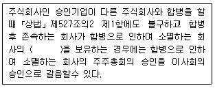
- 발행주식총수 중 의결권 있는 주식의 100분의 90 이상
- 발행주식총수의 100분의 90 이상
- 발행주식총수의 3분의 2 이상
- 발행주식총수의 100분의 50 이상
- 발행주식총수 중 의결권 있는 주식의 3분의 2 이상
(정답률: 알수없음)
35. 중소기업 인력지원 특별법상 중소벤처기업부장관이 실시하는 사업에 해당하지 않는 것은?
- 미취업자를 대상으로 산업현장에서 필요한 실무교육과 현장연수를 받게 한 후 중소기업에 채용 알선
- 15세 이상 34세 이하인 미취업자의 중소기업 취업을 촉진하기 위하여 이들을 고용하는 중소기업에 고용장려금 지급
- 중소기업체험사업을 효율적으로 실시하기 위하여 사업에 참가하는 학생에게 정보 제공 등의 지원
- 인력채용 연계사업에 참여하는 미취업자에 대한 실무교육 및 현장연수 수당 등 지원
- 중소기업의 수요에 맞는 인력양성을 촉진하기 위하여 중소기업과「초ㆍ중등교육법」에 따른 각급 학교를 연계하여 재학생을 대상으로 맞춤형 교육 실시
(정답률: 알수없음)
36. 중소기업 인력지원 특별법상 성과보상기금의 재원으로 될 수 없는 것은?
- 중소기업이 부담하는 기여금
- 중소기업 핵심인력이 납부하는 공제납입금
- 성과보상기금의 관리 및 운용에 필요한 차입금
- 지방자치단체의 교육세 수입금
- 성과보상기금의 운용으로 발생하는 수익금
(정답률: 알수없음)
37. 중소기업 인력지원 특별법의 내용으로 옳지 않은 것은?
- 부동산업종의 중소기업에 대해서는 적용하지 않는다.
- 인재육성형 중소기업 지정의 유효기간은 지정을 받은 날부터 3년으로 한다.
- 20세인 미취업자는 인력채용 연계사업의 대상자이다.
- 중소벤처기업부장관은 중소기업 인력지원 기본계획을 3년마다 수립하여야 한다.
- 인력구조 고도화사업이란 중소기업 관련 단체 및 협동조합등이 고급인력의 확보, 인력관리의 개선, 근로시간의 단축 등을 목적으로 사업계획을 수립하고 실시하는 사업을 말한다.
(정답률: 알수없음)
38. 중소기업 인력지원 특별법상 성과보상기금의 사용 용도로 옳지 않은 것은?
- 중소기업 핵심인력에 대한 복지사업
- 중소기업 핵심인력의 직무역량 강화를 위한 교육사업
- 성과보상기금의 관리 및 운용
- 중소기업 핵심인력의 전직지원사업
- 중소기업 핵심인력에 대한 성과보상공제사업
(정답률: 알수없음)
39. 장애인기업활동 촉진법상 한국장애경제인협회가 수행하는 업무가 아닌 것은?
- 장애인기업에 대한 정보 제공
- 장애인 창업에 대한 지원 및 촉진 활동
- 장애인기업활동촉진에 관한 기본계획의 심의
- 공동구매 및 판매사업 지원
- 장애인기업의 외국인투자 유치 지원
(정답률: 알수없음)
40. 장애인기업활동 촉진법의 내용으로 옳지 않은 것은?
- 장애인기업활동촉진위원회의 위원장은 중소벤처기업부장관이 된다.
- 장애인기업으로 확인받았더라도 폐업 등의 사유로 기업활동을 하지 아니하게 된 경우에는 그 확인이 취소될 수 있다.
- 장애인기업의 확인을 취소하려면 청문을 하여야 한다.
- 지방자치단체는 중소기업에 대하여 자금을 지원하는 경우 장애인기업을 우대하여야 한다.
- 「산업디자인진흥법」에 따른 한국디자인진흥원은 장애인기업의 디자인 개발을 촉진하기 위하여 노력하여야 한다.
(정답률: 알수없음)
2과목: 경영학
41. 매슬로우(A. Maslow)의 욕구단계이론과 알더퍼(C. Alderfer)의 ERG이론에 관한 설명으로 옳지 않은 것은?
- 욕구단계이론과 ERG이론은 하위욕구가 충족되면 상위욕구를 추구한다고 보는 공통점이 있다.
- ERG이론에서는 욕구의 좌절 -퇴행 과정도 일어난다.
- 욕구단계이론에서 자아실현의 욕구는 ERG이론에서 성장욕구에 해당한다.
- 욕구단계이론에서는 한 시점에 낮은 단계와 높은 단계의 욕구가 동시에 발생한다.
- 욕구단계이론에서 생리적 욕구는 ERG이론에서 존재욕구에 해당한다.
(정답률: 알수없음)
42. 호손(Hawthorne) 연구에 관한 설명으로 옳지 않은 것은?
- 인간이 조직에서 중요한 요소의 하나라는 사실을 강조하였다.
- 개인과 집단의 사회적ㆍ심리적 요소가 조직성과에 영향을 미친다는 사실을 인식하였다.
- 비공식조직이 조직성과에 영향을 미치는 것을 확인하였다.
- 작업의 과학화, 객관화, 분업화의 중요성을 강조하였다.
- 매슬로우(A. Maslow) 등이 주도한 인간관계운동의 출현을 가져왔다.
(정답률: 알수없음)
43. 버나드(C. Barnard)와 사이먼(H. Simon)이 주장한 이론은?
- 과학적 관리법
- 관료제
- 상황이론
- 의사결정이론
- 경영과학
(정답률: 알수없음)
44. 조직화 과정의 올바른 순서는?
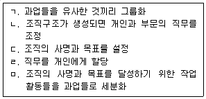
- ㄱ→ㄷ→ㅁ→ㄴ→ㄹ
- ㄷ→ㅁ→ㄴ→ㄱ→ㄹ
- ㄷ →ㅁ→ ㄹ→ㄴ→ㄱ
- ㅁ→ㄷ→ㄱ→ㄹ→ㄴ
- ㅁ→ㄷ→ㄴ→ㄹ→ㄱ
(정답률: 알수없음)
45. 균형성과표(BSC)의 네 가지 관점이 아닌 것은?
- 내부 프로세스 관점
- 외부 프로세스 관점
- 고객관점
- 학습 및 성장 관점
- 재무관점
(정답률: 알수없음)
46. 하우스(R. House)의 경로 - 목표 이론에서 정의한 리더십 행동 유형이 아닌 것은?
- 혁신적(innovational) 리더
- 성취지향적(achievement oriented) 리더
- 지시적(instrumental) 리더
- 지원적(supportive) 리더
- 참여적(participative) 리더
(정답률: 알수없음)
47. 사용자가 노동조합원이 아닌 자도 고용할 수 있지만, 일단 고용된 근로자는 일정 기간 내 노동조합에 가입해야 하는 제도는?
- 플렉스 숍(flex shop)
- 레이버 숍(labor shop)
- 오픈 숍(open shop)
- 클로즈드 숍(closed shop)
- 유니온 숍(union shop)
(정답률: 알수없음)
48. 모티베이션 이론 중 과정이론으로만 묶인 것은?
- 욕구단계론, 성취동기이론
- 공정성이론, 목표설정이론
- ERG이론, 기대이론
- ERG이론, 2요인이론
- 성취동기이론, 욕구단계론
(정답률: 알수없음)
49. 우리나라의 최저임금제도 운영에서 실시되지 않았던 것은?
- 업종별 차등 적용
- 지역별 차등 적용
- 직무별 차등 적용
- 사업체 규모별 차등 적용
- 근로자 연령별 차등 적용
(정답률: 알수없음)
50. 직무수행에 요구되는 지식, 기능, 행동, 능력 등을 기술한 문서는?
- 고용계약서
- 역량평가서
- 직무평정서
- 직무기술서
- 직무명세서
(정답률: 알수없음)
51. 세분시장을 결정할 때 고려해야 할 요인이 아닌 것은?
- 수익 및 성장의 잠재력
- 세분시장 내 욕구의 동질성 정도와 세분시장 간 욕구의 상이성 정도
- 세분시장에 대한 접근가능성의 정도
- 시장세분화에 소요되는 비용
- 세분시장의 인지부조화
(정답률: 알수없음)
52. 사업별 조직구조의 강점이 아닌 것은?
- 분권화된 의사결정
- 기능부서 간 원활한 조정
- 불안정한 환경에서 신속한 변화에 적합
- 명확한 책임 소재를 통한 고객만족 향상
- 제품 라인 간 통합과 표준화 강화
(정답률: 알수없음)
53. 다음 분석 기법을 설명하는 용어는?
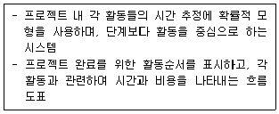
- Markov chain analysis
- Gantt chart
- LP(linear programming)
- PERT(program evaluation & review technique)
- VE(value engineering)
(정답률: 알수없음)
54. 기업의 환경경영체제를 평가하여 인증하는 국제환경규격은?
- ISO 9000
- ISO 14000
- ISO 26000
- ISO 27000
- ISO 31000
(정답률: 알수없음)
55. A 기업이 현금 1,000 만원을 투자하여 1년 후 2,000 만원의 현금유입이 발생하였다. 투자안의 순현재가치(NPV)는 약 얼마인가? (단, 요구수익률은 10%이다.)
- 618만원
- 668만원
- 718만원
- 768 만원
- 818만원
(정답률: 알수없음)
56. 투자안의 경제성 평가방법에 관한 설명으로 옳은 것은?
- 회수기간법은 시간적 가치를 고려한다.
- 순현가법은 투자를 하여 얻은 현금흐름의 현재가치와 초기 투자금액을 비교하여 투자의 적정성을 평가한다.
- 내부수익률은 미래의 현금흐름의 순현가를 1로 만드는 할인율이다.
- 회계적이익률법에서 회계적이익률은 연평균투자액을 연평균순이익으로 나눈 것이다.
- 수익성지수법에서 수익성지수는 투자비를 현금유출액으로 나눈 것이다.
(정답률: 알수없음)
57. 탄력적 근로시간제를 근로자대표와 합의하에 실시할 경우 단위기간 한도는?
- 2주
- 1개월
- 3개월
- 6개월
- 1년
(정답률: 알수없음)
58. 해크만과 올드햄(R. Hackman & G. Oldham)의 직무특성모형에서 5가지 핵심 직무특성이 아닌 것은?
- 기능 다양성
- 과업 정체성
- 과업 중요성
- 과업 전문성
- 자율성
(정답률: 알수없음)
59. 현대적 직무설계방안이 아닌 것은?
- 직무순환
- 직무확대
- 직무전문화
- 직무충실화
- 준자율적 작업집단
(정답률: 알수없음)
60. 프렌치와 레이븐(J. French & B. Raven)이 제시한 조직 내 권력의 원천 5가지가 아닌 것은?
- 구조적 권력(structural power)
- 보상적 권력(reward power)
- 강압적 권력(coercive power)
- 합법적 권력(legitimate power)
- 전문적 권력(expert power)
(정답률: 알수없음)
61. 경영의사결정에 관한 설명으로 옳지 않은 것은?
- 합리적 의사결정모형은 완전한 정보를 가진 가장 합리적인 의사결정행동을 모형화하고 있다.
- 경영자가 하는 대부분의 의사결정은 최선의 대안보다는 만족할만한 대안을 선택하는 것으로 귀결되는 경우가 많다.
- 브레인스토밍은 타인의 의견에 대한 비판을 통해 대안을 찾는 방법이다.
- 집단응집력을 낮춤으로써 의사결정과정에서의 집단사고 경향을 낮출 수 있다.
- 명목집단법은 문제의 답에 대한 익명성을 보장하고, 반대논쟁을 극소화하는 방식으로 문제해결을 시도하는 방법이다.
(정답률: 알수없음)
62. 델파이법에 관한 설명으로 옳지 않은 것은?
- 모든 토의 구성원에게 문제를 분명히 알린다.
- 전문가들에게 대안을 수집하기 때문에 신속하게 의사결정을 할 수 있다.
- 전문가들로부터 개진된 의견을 취합하여 다시 모든 구성원과 공유한다.
- 시간적ㆍ지리적 제약이 있는 경우 유용하게 활용될 수 있다.
- 합의된 의사결정대안의 도출까지 진행과정을 반복한다.
(정답률: 알수없음)
63. 제품포트폴리오관리(PPM)에 관한 설명으로 옳지 않은 것은?
- 경영자원의 포괄적 파악과 적절한 배분에 유용한 프레임워크이다.
- 기업활동을 단순하고 명쾌하게 분석하는데 효과적인 방법이다.
- 최고경영자는 기업전체수준에서 사업평가와 자원할당에 대한 통찰력을 얻을 수 있다.
- 제품포트폴리오관리는 시장세분화와 시장성숙도에 기초하여 기업전략을 수립한다.
- 기업의 전체사업들을 고려함으로써 잠재적인 사업 확보와 철수를 고려하는 유용한 메커니즘을 제공한다.
(정답률: 알수없음)
64. BCG매트릭스에 관한 설명으로 옳지 않은 것을 모두 고른 것은?
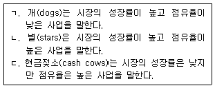
- ㄱ
- ㄴ
- ㄱ, ㄷ
- ㄴ, ㄷ
- ㄱ, ㄴ, ㄷ
(정답률: 알수없음)
65. SWOT분석에 관한 설명으로 옳은 것은?
- 교섭력 분석기법
- 사업포트폴리오 분석기법
- 안정성 평가기법
- 기업환경의 기회, 위협, 강점, 약점을 분석하는 기법
- 수익성, 성장성, 효과성을 분석하는 최신기법
(정답률: 알수없음)
66. 과거의 목표설정과 관리방식을 유지하면서 주요 정책이나 방침에 변화를 주지 않는 전략은?
- 안정전략
- 확장전략
- 축소전략
- 결합전략
- 차별화전략
(정답률: 알수없음)
67. 포터(M. Porter)의 산업구조분석모형(five forces model)에 관한 설명으로 옳은 것은?
- 잠재경쟁자의 진입위험이 높으면 산업의 전반적인 수익률은 낮아진다.
- 산업 내 기존기업 간의 경쟁정도가 높으면 산업의 전반적인 수익률은 높아진다.
- 구매자의 교섭력이 낮으면 산업의 전반적인 수익률은 낮아진다.
- 공급자의 교섭력이 높으면 산업의 전반적인 수익률은 높아진다.
- 산업의 제품에 대한 대체재의 출현가능성이 낮으면 산업의 전반적인 수익률은 낮아진다.
(정답률: 알수없음)
68. 기업의 수직적 통합(vertical integration)에 관한 설명으로 옳지 않은 것은?
- 후방통합(backward integration)은 부품과 원료 등의 투입요소에 대한 소유와 통제를 갖는다.
- 전방통합(forward integration)을 통하여 판매 및 분배경로를 통합함으로써 안정적인 판로를 확보할 수 있다.
- 기업의 효율적인 생산규모와 전체적인 생산능력의 균형을 관리ㆍ유지하기가 쉽다.
- 통합된 기업 중 어느 한 기업의 비효율성이 나타나는 경우 기업 전체의 비효율성으로 확대될 가능성이 높다.
- 부품생산에서의 비용구조에 대한 정확한 정보를 가질 수 있다.
(정답률: 알수없음)
69. 기업 간 전자상거래를 의미하는 용어는?
- B2B
- B2C
- B2G
- G2C
- C2C
(정답률: 알수없음)
70. 고객관계관리(CRM)의 성공 전제조건이 아닌 것은?
- 고객을 분석할 수 있는 데이터마이닝 도구가 필요하다.
- 고객관계관리를 위하여 인적네트워크가 필수적이다.
- 대용량 데이터분석을 위한 대용량 컴퓨터가 필요하다.
- 전략실행을 위한 다양한 마케팅채널과 연계되어야 한다.
- 고객통합 데이터베이스가 구축되어야 한다.
(정답률: 알수없음)
71. 허쉬와 블랜차드(P. Hersey & K. Blanchard)의 상황적 리더십 이론에서 설명한 4가지 리더십 스타일이 아닌 것은?
- 설명형
- 설득형
- 관료형
- 참여형
- 위임형
(정답률: 알수없음)
72. 시장지배를 목적으로 동일한 생산단계에 속한 기업들이 하나의 자본에 결합하는 기업집중형태는?
- 카르텔(cartel)
- 콤비나트(combinat)
- 콘체른(concern)
- 조인트벤처(joint venture)
- 트러스트(trust)
(정답률: 알수없음)
73. 목표관리(MBO)의 일반적 요소가 아닌 것은?
- 목표의 구체성(goal specificity)
- 명확한 기간(explicit time period)
- 성과 피드백(performance feedback)
- 참여적 의사결정(participative decision making)
- 조직구조(organizational structure)
(정답률: 알수없음)
74. 세계 각국의 근로조건을 국제적으로 표준화할 목적으로 추진되는 다자간 무역협상을 설명하는 용어는?
- Blue Round
- Green Round
- Technology Round
- Competition Round
- Ethics Round
(정답률: 알수없음)
75. 혁신을 위한 환경요소가 아닌 것은?
- 유기적 조직구조
- 세밀하고 철저한 일정관리
- 긍정적 피드백
- 갈등에 대한 포용
- 낮은 외부 통제
(정답률: 알수없음)
76. 공급사슬 내에서 소비자로부터 생산자로 갈수록 그 주문 변동 폭이 확대되는 것은?
- 크로스도킹시스템(cross docking system)
- 동기화(synchronization)
- e-커머스(e-commerce)
- 채찍효과(bullwhip effect)
- 자동발주시스템(computer assisted ordering)
(정답률: 알수없음)
77. 다음에서 공통으로 설명하는 경영개념은?
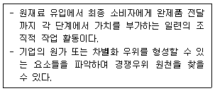
- benchmarking
- division of labor
- just in time
- reengineering
- value chain
(정답률: 알수없음)
78. 모험적으로 위험을 감수하고 새로운 아이디어를 적극적으로 수용하는 계층은?
- 혁신자(innovator)
- 조기수용자(early adopter)
- 조기다수자(early majority)
- 후기다수자(late majority)
- 지각수용자(laggard)
(정답률: 알수없음)
79. 정보 사일로(information silo)의 의미는?
- 2개 이상의 독립적인 기업이 특정 시스템을 공유하는 것
- 다양한 업무부서의 활동을 지원하기 위한 정보시스템
- 서로 다른 정보시스템에서 데이터가 고립되어 상호작용이 어려운 관리시스템
- 고객과의 상호작용 업무와 관련된 모든 시스템을 연결한 통합관리 시스템
- 고유프로세스, 어플리케이션, 데이터베이스를 단일한 플랫폼으로 연결한 집합체
(정답률: 알수없음)
80. 다음에서 공통으로 설명하는 개념은?
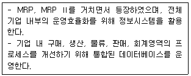
- business intelligence
- customer relationship management
- enterprise resource planning
- supplier relationship management
- supply chain management
(정답률: 알수없음)
3과목: 회계학개론
81. ‘재무보고를 위한 개념체계’의 내용 중 자산에 관한 설명으로 옳지 않은 것은?
- 자산은 과거 사건의 결과로 기업이 통제하고 있고 미래경제적효익이 기업에 유입될 것으로 기대되는 자원이다.
- 특정 항목이 자산의 정의를 충족하는지를 판단할 때에 단순한 법률적 형식이 아닌 거래의 실질과 경제적 현실을 고려하여야 한다.
- 자산이 갖는 미래경제적효익이란 직접으로 또는 간접으로 미래 현금 및 현금성자산의 기업에의 유입에 기여하게 될 잠재력을 말한다.
- 유형자산을 포함한 많은 종류의 자산이 물리적 형태를 가지고 있는 것처럼 자산의 존재를 판단하기 위해서 물리적 형태가 필수적이다.
- 미래에 발생할 것으로 예상되는 거래나 사건 자체만으로는 자산이 창출되지 아니한다.
(정답률: 알수없음)
82. 부채의 본질적 특성인 기업의 현재의무를 이행하는 것에 해당하는 것은?
- 자산을 다른 자산과 교환하다.
- 재화를 외상으로 구입하다.
- 은행에서 대출을 받는다.
- 부채를 다른 부채로 대체하다.
- 의무불이행에 따른 위약금이 발생하다.
(정답률: 알수없음)
83. (주)대한의 20×1년 기초순자산은 ￦50,000이고, 기말순자산은 ￦70,000이다. (주)대한은 20×1년 중 ￦5,000의 유상증자를 하였고, 중간배당으로 현금 ￦2,000을 주주에게 지급하였다. 명목화폐단위 재무자본유지개념에 따른 손익은?
- 손실 ￦20,000
- 이익 ￦15,000
- 이익 ￦17,000
- 이익 ￦20,000
- 이익 ￦23,000
(정답률: 알수없음)
84. 현금흐름표에서 재무활동 현금흐름으로 분류되지 않는 것은?
- 단기차입금의 상환에 따른 현금유출
- 단기차입금의 차입에 따른 현금유입
- 유상감자로 인한 현금유출
- 사채의 발행에 따른 현금유입
- 유형자산의 처분에 따른 현금유입
(정답률: 알수없음)
85. 주석에 관한 설명으로 옳은 것은?
- 재무제표 어느 곳에도 표시되지 않지만 재무제표를 이해하는데 목적적합한 정보를 제공한다.
- 기업의 현금및현금성자산 창출능력과 기업의 현금흐름 사용 필요성에 대한 평가의 기초를 재무제표이용자에게 제공한다.
- 특정 필요에 따른 특수보고서의 작성을 기업에 요구할 수 있는 위치에 있지 아니한 재무제표이용자의 정보요구를 충족시키기 위해 작성되는 재무제표를 말한다.
- 기업의 재무상태를 이해하는 데 목적적합한 경우 재무상태표에 항목, 제목 및 중간합계를 추가하여 표시한 것이다.
- 다른 한국채택국제회계기준서에서 요구하거나 허용하여 당기손익으로 인식하지 않은 수익과 비용항목을 말한다.
(정답률: 알수없음)
86. (주)대한의 20×1년 말 자산과 부채가 다음과 같을 때, 20×1년 말 자본은?
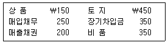
- ￦400
- ￦450
- ￦500
- ￦550
- ￦600
(정답률: 알수없음)
87. 재무제표의 표시에 관한 설명으로 옳은 것은?
- 수익과 비용은 상계하여 표시한다.
- 재무제표는 매 회계연도 말 청산을 가정하여 작성된다.
- 부적절한 회계정책은 이에 대하여 공시나 주석 또는 보충 자료를 통해 설명한 경우 예외적으로 정당화될 수 있다.
- 중요하지 않은 항목은 성격이나 기능이 유사한 항목과 통합하여 표시할 수 있다.
- 재무제표는 적어도 매 분기마다 작성한다.
(정답률: 알수없음)
88. (주)대한은 20×1년 말 단기차입금 ￦1,000을 현금으로 상환하였다. 다음 중 영향을 받지 않는 재무비율은? (단, (주)대한의 20×1년 말의 유동자산은 유동부채보다 더 많고, 부채비율을 계산할 때 분모로 자기자본을 이용한다.)
- 총자산이익률
- 부채비율
- 유동비율
- 총자산회전율
- 자본이익률
(정답률: 알수없음)
89. (주)대한의 20×1년도 영업이익과 당기순이익은 각각 ￦800과 ￦500이며, 이자비용은 ￦100, 법인세비용은 ￦200이다. 20×1년 지급된 현금이자는 ￦50일 때, (주)대한의 20×1년도 이자보상비율은?
- 5
- 8
- 10
- 13
- 16
(정답률: 알수없음)
90. 수정분개 중 결과적으로 자산감소와 자본감소를 초래하는 것은?
- 선수임대료 중 실현된 부분을 인식하기 위한 수정분개
- 미지급급여 발생액을 인식하기 위한 수정분개
- 실현되었지만 현금으로 수취되지 않은 수익을 인식하기 위한 수정분개
- 선급보험료 중 기간경과로 소멸된 부분을 인식하기 위한 수정분개
- 비용으로 처리한 거래를 자산으로 인식하기 위한 수정분개
(정답률: 알수없음)
91. (주)대한은 20×1년 중 소모품을 ￦850에 구매하고 자산으로 기록하였다. 20×1년 말 ￦340의 소모품이 사용되지 않고 남아있을 때, (주)대한의 기말 수정분개로 옳은 것은? (단, 20×1년 초 소모품은 없다.)
- (차) 소모품비 510 (대) 소 모 품 510
- (차) 선급비용 510 (대) 소 모 품 510
- (차) 소모품비 340 (대) 소 모 품 340
- (차) 소 모 품 510 (대) 소모품비 510
- (차) 소모품비 410 (대) 선급비용 410
(정답률: 알수없음)
92. 회계추정의 변경에 관한 설명으로 옳지 않은 것은?
- 회계추정의 변경은 새로운 정보의 획득, 새로운 상황의 전개 등에 따라 지금까지 사용해오던 회계적 추정치를 바꾸는 것으로 오류수정에 해당하지 아니한다.
- 회계추정의 변경은 기업이 재무제표를 작성ㆍ표시하기 위하여 적용하는 구체적인 원칙, 근거, 관습, 규칙 및 관행을 바꿈으로써 발생한다.
- 측정기준의 변경은 회계추정의 변경이 아니라 회계정책의 변경에 해당한다.
- 회계정책의 변경과 회계추정의 변경을 구분하는 것이 어려운 경우에는 이를 회계추정의 변경으로 본다.
- 대손과 재고자산 진부화는 추정이 필요할 수 있는 항목에 해당한다.
(정답률: 알수없음)
93. 감사인이 감사절차 진행 후 상황이 다음과 같을 때 표명할 적정한 감사의견은?
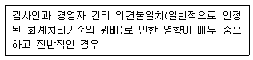
- 적정의견
- 한정의견
- 의견보류
- 의견거절
- 부적정의견
(정답률: 알수없음)
94. 20×1년 초에 설립된 (주)대한의 당기 재고자산 거래내역이 다음과 같고, 재고자산 가격결정방법으로 선입선출법을 적용할 경우, 계속기록법에 의한 매출원가와 실지재고조사법에 의한 기말재고액은? (단, 기말재고수량은 120개이다.) (순서대로 매출원가, 기말재고액)
- ￦13,600, ￦12,960
- ￦13,600, ￦13,400
- ￦14,600, ￦13,400
- ￦16,000, ￦11,000
- ￦26,000, ￦11,000
(정답률: 알수없음)
95. 회계연도 말 단기차익목적으로 보유하고 있는 다른 상장회사 주식의 공정가치가 장부금액을 초과할 경우 회계처리에 관한 설명으로 옳은 것은?
- 장부금액을 상각후원가에 유효이자율을 적용한다.
- 장부금액을 초과하는 공정가치를 당기순손익으로 인식한다.
- 장부금액을 초과하는 공정가치를 기타포괄손익으로 인식한다.
- 장부금액을 초과하는 공정가치는 총포괄손익에 포함되지 않는다.
- 장부금액을 초과하는 공정가치는 포괄손익계산서에 보고되지 않는다.
(정답률: 알수없음)
96. 금융자산에 관한 설명으로 옳은 것은?
- 금융자산은 보유기간에 따라 상각후원가측정 금융자산, 기타포괄손익-공정가치 측정 금융자산, 당기손익-공정가치 금융자산으로 분류한다.
- 금융자산을 당기손익-공정가치 측정 범주에서 상각후원가 측정 범주로 재분류하는 경우에 재분류일의 장부금액이 새로운 총장부금액이 된다.
- 회계불일치를 제거하거나 유의적으로 줄이는 경우에는 취득 시점 이후라도 해당 금융자산을 당기손익-공정가치 금융자산으로 지정할 수 있다.
- 최초 인식시점에 금융자산은 공정가치로 측정하며, 해당 금융자산의 취득과 직접 관련되는 거래원가는 공정가치에 가산한다.
- 일부의 경우를 제외하고, 최초 인식 후에 금융상품의 신용위험이 유의적으로 증가하지 아니한 경우에는 보고기간 말에 12개월 기대신용손실에 해당하는 금액으로 손실충당금을 측정한다.
(정답률: 알수없음)
97. 부채계정 중 재무상태표에 계상될 수 없는 것은?
- 미지급법인세
- 예수금
- 선수수익
- 가수금
- 선수금
(정답률: 알수없음)
98. (주)대한의 20×1년 매출총이익률은 50%이고, 재고자산 거래내역은 다음과 같을 때, 당기매출원가는?
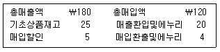
- ￦75
- ￦80
- ￦90
- ￦95
- ￦110
(정답률: 알수없음)
99. (주)대한은 20×1년 초 기계장치를 구입(취득원가 ￦8,500, 잔존가치 ￦500, 내용연수 4년)하고 감가상각방법으로 연수합계법을 적용하였다. (주)대한이 해당 기계장치를 20×2년 말 ￦2,500에 처분하였을 때, 처분손익은?
- 손실 ￦400
- 손실 ￦300
- 손실 ￦200
- 이익 ￦300
- 이익 ￦400
(정답률: 알수없음)
100. 액면가액이 ￦5,000인 보통주 1주를 주당 ￦6,000에 발행하였을 때, 재무제표에 미치는 영향으로 옳은 것은?
- 자산총액 ￦5,000 증가
- 자본총액 ￦5,000 증가
- 자본금 ￦5,000 증가
- 당기순이익 ￦1,000 증가
- 이익잉여금 ￦1,000 증가
(정답률: 알수없음)
101. 무형자산에 관한 설명으로 옳지 않은 것은?
- 무형자산은 물리적 실체는 없지만 식별할 수 있는 비화폐성자산을 말한다.
- 무형자산의 미래경제적효익은 제품의 매출, 용역수익, 원가절감 또는 자산의 사용에 따른 기타 효익의 형태로 발생할 수 있다.
- 내용연수가 비한정인 무형자산은 상각하지 아니한다.
- 내부적으로 창출한 영업권은 자산으로 인식하지 아니한다.
- 무형자산을 최초로 인식할 때에는 원가와 시가 중 적은 금액으로 측정한다.
(정답률: 알수없음)
102. (주)대한은 20×1년 1월 1일 다음과 같은 조건에 따라 ￦950,244에 사채를 할인 발행하였을 때, 20×1년 사채할인발행차금 상각액은? (단, 계산 금액은 소수점 첫째자리에서 반올림한다.)
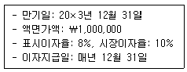
- ￦7,602
- ￦15,024
- ￦40,000
- ￦76,020
- ￦95,024
(정답률: 알수없음)
103. 수익과 비용의 인식에 관한 설명으로 옳지 않은 것은?
- 수익의 인식은 자산의 증가나 부채의 감소에 대한 인식과 동시에 이루어진다.
- 일반적으로 수익은 현금을 수취한 때에 인식한다.
- 비용의 인식은 부채의 증가나 자산의 감소에 대한 인식과 동시에 이루어진다.
- 비용은 발생된 원가와 특정 수익항목의 가득 간에 존재하는 직접적인 관련성을 기준으로 인식한다.
- 감가상각비는 체계적이고 합리적인 배분절차를 기준으로 인식한다.
(정답률: 알수없음)
104. (주)대한은 핸드폰을 판매하고 2년간 품질보증을 해주고 있다. 과거 경험에 비추어볼 때, 매출액의 5%가 보증비용으로 발생할 것으로 추정된다. 20×1년과 20×2년의 매출액과 실제 발생한 보증비용은 다음과 같다. 20×2년 말 제품보증충당부채는?
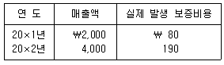
- ￦10
- ￦20
- ￦30
- ￦80
- ￦190
(정답률: 알수없음)
1⑤. 고객과의 계약에서 생기는 수익의 인식과정 중 ‘수행의무의 식별’ 이전 단계에 해당하는 것은?
- 고객과의 계약 식별
- 거래가격의 배분
- 계약이행 가능성 확인
- 거래가격의 산정
- 수익의 인식
(정답률: 알수없음)
106. 부채에 관한 설명으로 옳은 것은?
- 현재 재판에 계류 중인 소송에 대해 자원의 유출가능성이 높지 않다면 재무제표 본문에 부채로 보고하지 않으며, 주석으로도 공시하지 않는다.
- 제품보증에 관한 애프터서비스의 경우 앞으로 언제, 얼마의 비용이 발생할지 확정할 수 없으므로 충당부채로 인식하지 않는다.
- 자원의 유출가능성에 상관없이, 예상되는 손실금액을 신뢰성 있게 추정할 수 있으면 충당부채로 인식할 수 있다.
- 장기차입금은 금융기관 등으로부터 자금을 차입하고 그 원금을 차입일로부터 1년 이후의 일정시점에 상환하게 되어 있는 채무를 말한다.
- 충당부채란 당기 수익에 대응하는 비용으로서 장래에 지출될 것이 확실하나 그 금액이나 지출시기 혹은 지출대상이 확정되어 있지 않은 부채이다.
(정답률: 알수없음)
107. (주)대한은 공장건물 신축을 위해 20×1년 초부터 2년간 ￦100,000을 차입하였다. 차입금에 대한 이자율은 연 12%인데, 동 차입금 중 ￦40,000을 5월 초부터 6월 말까지 은행에 예입하여 ￦1,500의 이자수익이 발생하였다. 공장건물의 신축은 20×1년 5월 초에 시작하여 20×1년 10월 말에 종료되었다. 공장건물은 적격자산에 해당된다. 20×1년 (주)대한이 공장건물의 취득원가에 가산할 차입원가는? (단, 기간은 월단위로 계산한다.)
- ￦4,500
- ￦6,000
- ￦8,000
- ￦10,500
- ￦12,000
(정답률: 알수없음)
108. (주)대한의 20×1년 말의 자본과 20×2년 중 발생한 거래내역이 다음과 같을 때, 20×2년말 자본총액은?
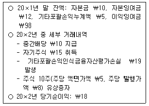
- ￦125
- ￦135
- ￦179
- ￦189
- ￦209
(정답률: 알수없음)
109. (주)대한은 20×1년 초부터 3년간 교량을 건설하는 계약을 체결하고 공사를 진행하고 있다. 총계약수익은 ￦400, 추정총계약원가는 ￦320이다. 연도별 계약원가 발생액은 20×1년, 20×2년, 20×3년에 각각 ￦128, ￦96, ￦96이다. 동 공사로 인한 20×2년 계약이익은? (단, 추정총계약원가는 변동이 없다.)
- ￦24
- ￦32
- ￦120
- ￦184
- ￦280
(정답률: 알수없음)
110. (주)대한의 20×1년 기초 자본현황과 20×1년도 자기주식 거래 및 당기순이익에 대한 정보가 다음과 같을 때, 20×1년 말 자본총계는?
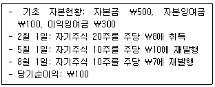
- ￦840
- ￦1,000
- ￦1,010
- ￦1,020
- ￦1,030
(정답률: 알수없음)
111. (주)대한은 건물을 신축할 목적으로 토지를 ￦3,000에 매입하였다. 토지 매입과 관련하여 등록세 등 수수료가 ￦300이 발생했으며, 토지 매입을 위해 의무적으로 매입해야 하는 국채를 ￦180에 구입하였다. 매입 당시 국채의 공정가치는 ￦150일 때, 재무상태표 상 토지는?
- ￦3,000
- ￦3,300
- ￦3,330
- ￦3,450
- ￦3,480
(정답률: 알수없음)
112. (주)대한의 20×1년 말 재무제표에 포함된 내용이다. 20×1년 말 자본잉여금은?
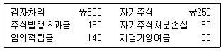
- ￦300
- ￦340
- ￦350
- ￦390
- ￦480
(정답률: 알수없음)
113. (주)대한은 원재료를 이용해서 결합생산공정으로부터 제품A와 제품B를 제조하며, 결합원 가는 순실현가치법을 이용하여 배부한다. 제품B에 배부된 결합원가가 ￦750이라면, 다음 자료를 이용할 때 배부 전 결합원가 총액은?
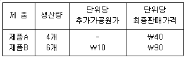
- ￦200
- ￦400
- ￦600
- ￦800
- ￦1,000
(정답률: 알수없음)
114. (주)대한은 월 5단위의 부품A를 자가제조하고 있으며, 단위당 제조원가는 다음과 같다.
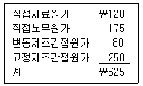
(주)대한은 부품A 5단위를 단위당 ￦575에 외부구입이 가능하다. 외부구입할 경우 유휴시설을 임대하여 월 ￦625의 수익을 얻을 수 있으며, 부품A에 배부된 고정제조간접원가를 단위당 ￦100만큼 회피가능하다. 외부구입시 (주)대한의 월간 이익에 미치는 영향은?
- ￦125 감소
- ￦100 감소
- ￦100 증가
- ￦125 증가
- ￦150 증가
(정답률: 알수없음)
115. (주)대한의 직접노무원가 자료가 다음과 같을 때 직접노무원가 유리한 능률차이는?
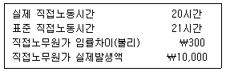
- ￦300
- ￦485
- ￦500
- ￦515
- ￦600
(정답률: 알수없음)
116. (주)대한은 단일의 제품을 생산ㆍ판매하고 있다. 연간 생산 및 판매 관련 자료가 다음과 같을 때 옳지 않은 것은?
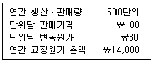
- 총원가 ￦28,000
- 총변동원가 ￦15,000
- 단위당 공헌이익 ￦70
- 영업이익 ￦21,000
- 손익분기점 판매량 200단위
(정답률: 알수없음)
117. (주)대한의 20×1년 발생한 원가가 다음과 같을 때 옳은 것은?
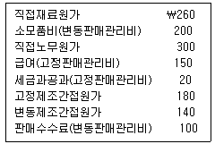
- 재고가능원가 ￦560
- 기초원가(prime costs) ￦400
- 변동원가계산하의 제조원가 ￦700
- 전부원가계산하의 제조원가 ￦620
- 전환원가(conversion costs) ￦560
(정답률: 알수없음)
118. (주)대한은 선입선출법에 의한 종합원가계산을 채택하고 있다. 직접재료는 공정초에 전량 투입되며, 전환원가는 공정 전체에 걸쳐 균등하게 발생한다. 기초재공품은 30단위(전환원가 완성도: 20%), 당기완성품은 180단위, 기말재공품은 20단위(전환원가 완성도: 40%)이다. 당기 직접재료원가와 전환원가의 완성품환산량은? (순서대로 직접재료원가, 전환원가)
- 170단위, 164단위
- 170단위, 182단위
- 200단위, 168단위
- 200단위, 182단위
- 200단위, 188단위
(정답률: 알수없음)
119. 원가 및 원가행태에 관한 설명으로 옳은 것은?
- 관련범위 내에서 단위당 고정원가는 각 생산량의 수준에서 일정하다.
- 관련범위 내에서 단위당 변동원가는 생산량이 증가함에 따라 감소한다.
- 제품의 생산과 관련하여 비정상적으로 발생한 경제적 자원의 소비는 제조원가에 포함하지 아니한다.
- 제조기업의 제품배달용 트럭의 감가상각비는 재고가능원가이다.
- 서비스기업의 본사에서 사용하는 컴퓨터 전기료는 재고가능원가이다.
(정답률: 알수없음)
120. (주)대한은 개별원가계산제도를 사용한다. 전기 말 현재 작업 #101(총제조원가 ￦510)이 미완성이었으며, 당기 중 작업 #102, #103, #104가 새로 시작되었고, #101, #102는 완성되어 판매되었다. 당기 중 작업별 직접원가 발생액이 다음과 같고, 당기 제조간접원가 실제 발생액 ￦816을 직접노무원가 기준으로 배부한다고 할 때 당기 매출원가는?
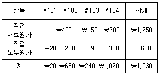
- ￦950
- ￦994
- ￦1,404
- ￦1,504
- ￦1,852
(정답률: 알수없음)